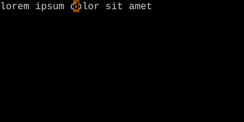
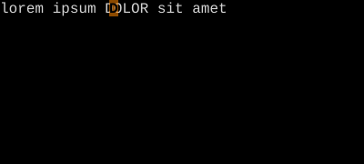
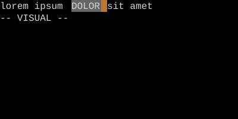

Re-Select — gv
Bring back the exact selection you just dismissed.
gv re-enters visual mode with the same selection you last had — same shape, same endpoints. Essential for re-applying an operator to the same region.
gv — Re-Select
gv re-enters visual mode with the exact same selection you last had — same shape, same lines, same characters.
| Key | Note |
|---|---|
| {key:V}{key:5}{key:j} | Select 6 lines |
| {key:>} | Indent — selection lost |
| {key:g}{key:v} | Bring it back |
| {key:>} | Indent again |
| {key:g}{key:v}{key:>} | Or just gv> repeatedly |
Worked example — gv
Re-select the previous visual region.



gv is great for chained visual operations.
Watch
See also: Visual + Ex Range, Operators on Visual Selections